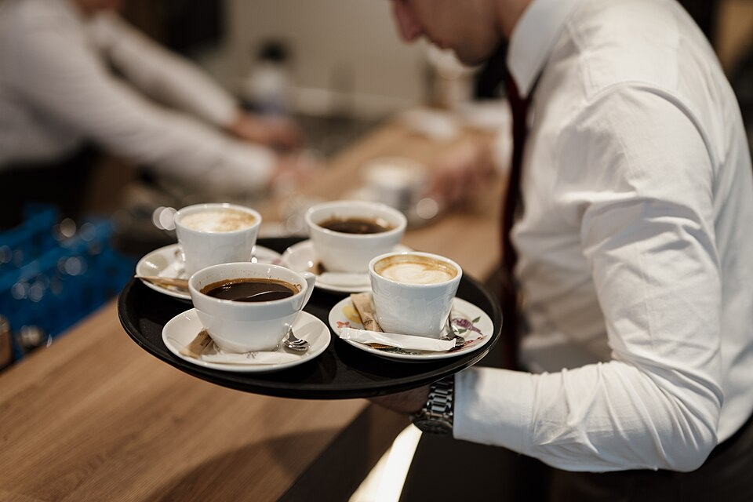
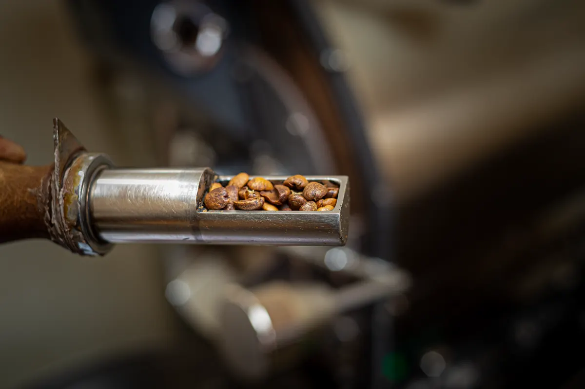
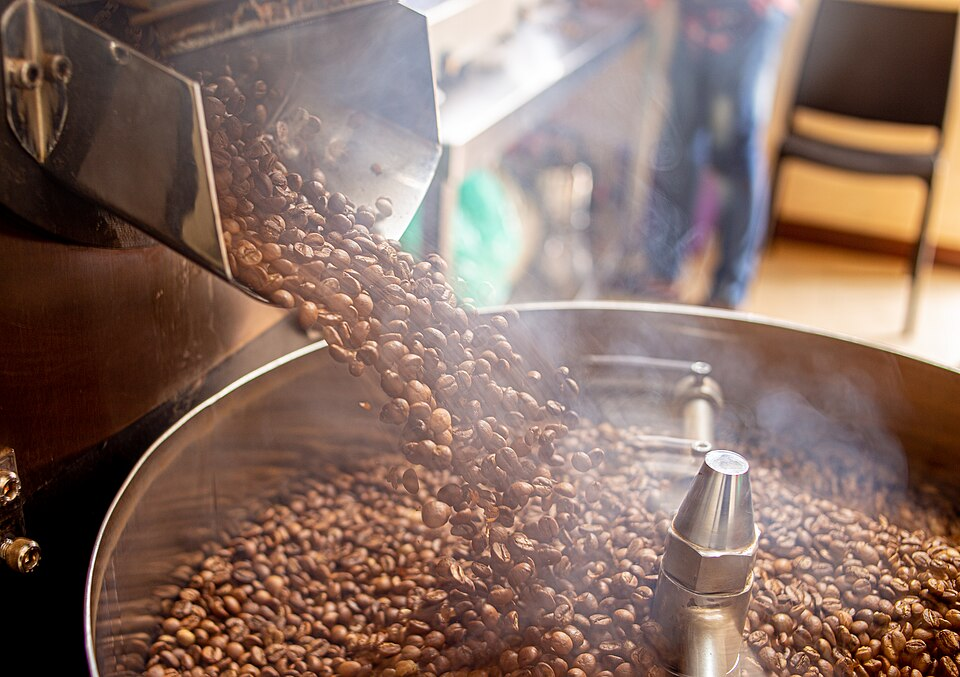

Café und Rösterei in der Mayener Altstadt
Espresso und Filterkaffee aus eigener Röstung, täglich ab 8 Uhr.
Besuch
Altstadt
Mayen
Mayen
- Montag bis Freitag
- 8:00 bis 18:00
- Samstag
- 9:00 bis 17:00
- Sonntag
- 10:00 bis 16:00

Die Karte
Alle Preise inklusive Steuer. Zur Anfahrt
Espresso
- Espresso2,40 €
- Doppio3,40 €
- Cappuccino3,80 €
- Flat White4,20 €
Filter
- FilterkaffeeDie Sorte der Woche3,20 €
- Aufgießen am TischZwei Tassen, zehn Minuten6,00 €
- Eiskaffee4,00 €
- Kakao3,60 €
Bohnen
- Hausmischung250 g, ganze Bohne8,90 €
- Single Origin250 g, wechselt monatlich10,50 €
- Entkoffeiniert250 g9,50 €
- Gemahlen auf WunschOhne Aufpreis0,00 €


Aus der Rösterei
Drei Schritte vom grünen Rohkaffee bis zur Tasse.
-

Sortieren
Jede Charge geht einmal durch die Hand, bevor sie in die Trommel kommt.
-

Rösten
Wir ziehen Proben und riechen, bis die Farbe stimmt. Danach kühlt die Charge sofort ab.
-

Abkühlen
Nach einem Tag Ruhe kommt der Kaffee in die Tüte oder gleich in die Mühle.